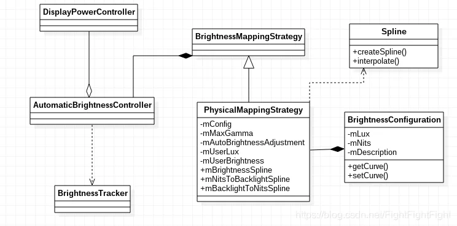
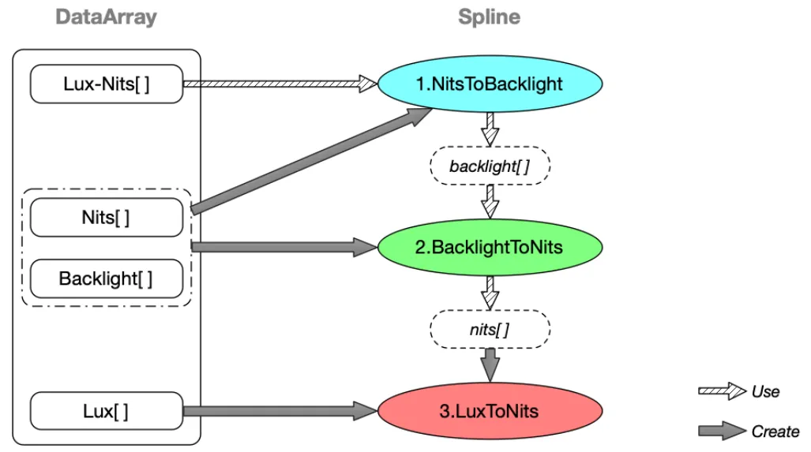
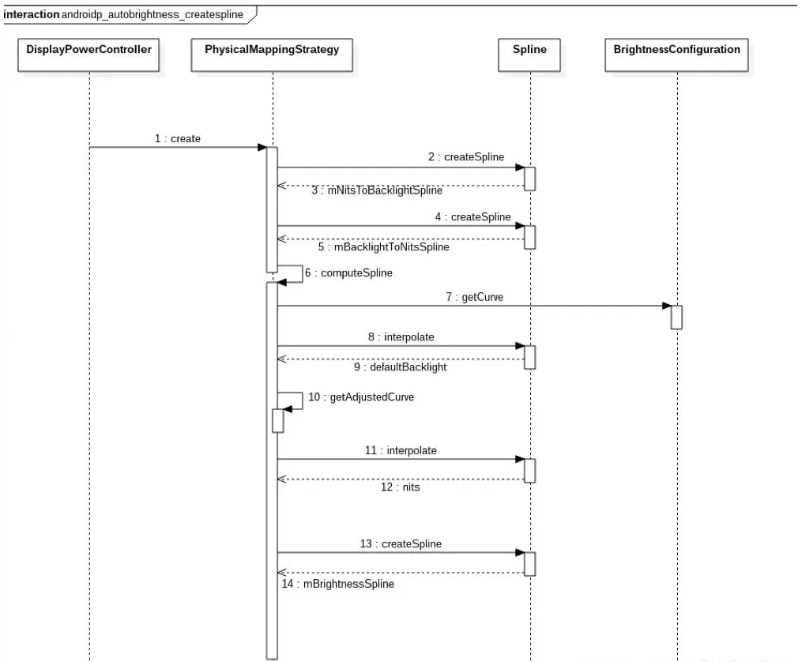
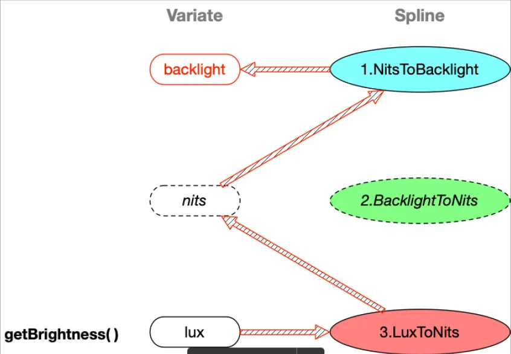
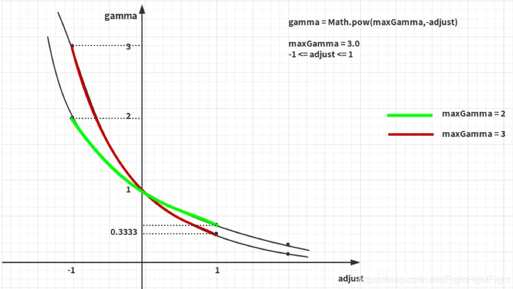
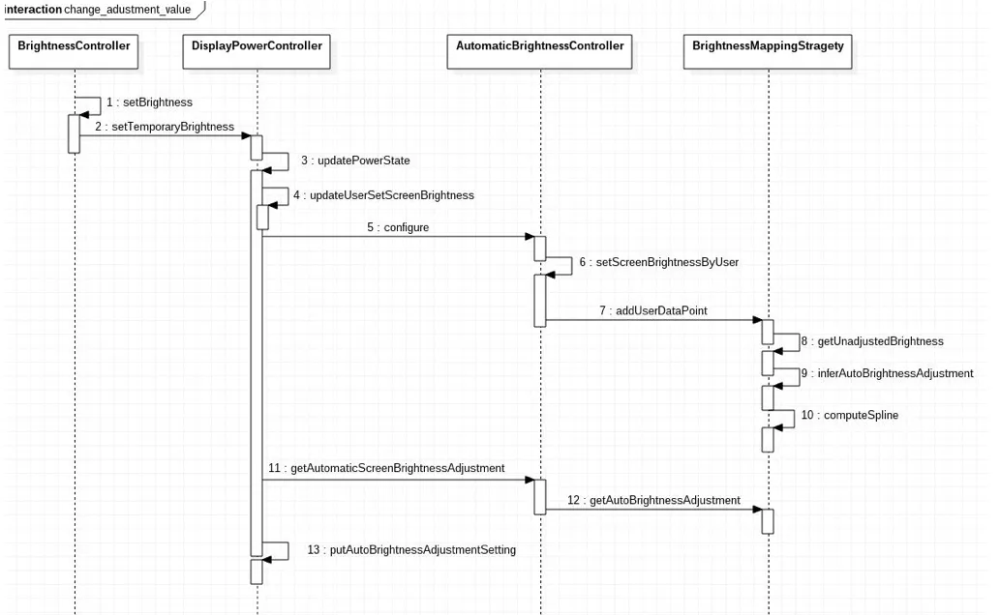

Android自动背光机制
类结构图¶

- AutomaticBrightnessController：只进行环境光强的监听后的一些处理，将背光曲线的创建等工作，交给了BrightnessMappingStrategy
- BrightnessMappingStrategy：将负责曲线的创建，自动背光值的计算等。
当获取自动背光值时，AutomaticBrightnessController将调用BrightnessMappingStrategy的接口获取。而BrightnessMappingStrategy在创建曲线时，则需要从BrightnessConfigure类中读取两个数组源: config_autoBrightnessLevels 和 config_autoBrightnessDisplayValuesNits。
创建背光样条曲线¶
自动背光是通过创建多个样条曲线来完成环境光照度与屏幕背光值的映射，系统会使用已知数据创建三条样条曲线：mNitsToBacklightSpline、mBacklightToNitsSpline、mBrightnessSpline。下图描述了这三个样条曲线的创建过程：

创建样条曲线的时序图如下： 
DisplayPowerController¶
自动背光样条曲线的创建放在了BrightnessMappingStrategy中，当系统启动进入DisplayPowerController构造方法后，就会开始创建背光样条曲线。
http://aospxref.com/android-12.0.0_r3/xref/frameworks/base/services/core/java/com/android/server/display/DisplayPowerController.java
public DisplayPowerController(Context context,
DisplayPowerCallbacks callbacks, Handler handler,
SensorManager sensorManager, DisplayBlanker blanker, LogicalDisplay logicalDisplay,
BrightnessTracker brightnessTracker, BrightnessSetting brightnessSetting,
Runnable onBrightnessChangeRunnable) {
...
//获取映射Lux-Nits-Backlight值的对象
setUpAutoBrightness(resources, handler);
...
}
private void setUpAutoBrightness(Resources resources, Handler handler) {
if (!mUseSoftwareAutoBrightnessConfig) {
return;
}
mBrightnessMapper = BrightnessMappingStrategy.create(resources, mDisplayDeviceConfig);
...
if (mBrightnessMapper != null) {
mAutomaticBrightnessController = new AutomaticBrightnessController(this,
handler.getLooper(), mSensorManager, mLightSensor, mBrightnessMapper,
lightSensorWarmUpTimeConfig, PowerManager.BRIGHTNESS_MIN,
PowerManager.BRIGHTNESS_MAX, dozeScaleFactor, lightSensorRate,
initialLightSensorRate, brighteningLightDebounce, darkeningLightDebounce,
autoBrightnessResetAmbientLuxAfterWarmUp, ambientBrightnessThresholds,
screenBrightnessThresholds, mLogicalDisplay, mContext, mHbmController);
}
...
}
http://aospxref.com/android-12.0.0_r3/xref/frameworks/base/services/core/java/com/android/server/display/BrightnessMappingStrategy.java
@Nullable
public static BrightnessMappingStrategy create(Resources resources,
DisplayDeviceConfig displayDeviceConfig) {
// Display independent values
//Lux值的数组，getLuxLevels()中会添加一个0元素作为Lux[0]
float[] luxLevels = getLuxLevels(resources.getIntArray(
com.android.internal.R.array.config_autoBrightnessLevels));
//Lux值对应的背光值，仅在简单映射情况下会使用
int[] brightnessLevelsBacklight = resources.getIntArray(
com.android.internal.R.array.config_autoBrightnessLcdBacklightValues);
//描述和Lux值对应屏幕亮度的Nits值数组，长度比原始Lux值数组大1。
//如果配置了该值，则必须配置 config_screenBrightnessNits 和 config_screenBrightnessBacklight
float[] brightnessLevelsNits = getFloatArray(resources.obtainTypedArray(
com.android.internal.R.array.config_autoBrightnessDisplayValuesNits));
//用户可调整的最大Gamma值
float autoBrightnessAdjustmentMaxGamma = resources.getFraction(
com.android.internal.R.fraction.config_autoBrightnessAdjustmentMaxGamma,
1, 1);
long shortTermModelTimeout = resources.getInteger(
com.android.internal.R.integer.config_autoBrightnessShortTermModelTimeout);
// Display dependent values - used for physical mapping strategy nits -> brightness
//描述屏幕亮度的 nits 值数组
final float[] nitsRange = displayDeviceConfig.getNits();
//描述与 nitsRange 数组中的亮度值(单位为Nits)相对应的屏幕背光值
final float[] brightnessRange = displayDeviceConfig.getBrightness();
//isValidMapping()用来检查映射的有效性，两个参数需要满足以下条件:
//（1）非空;
//（2）长度相同;
//（3）长度>=0;
//（4）参数1必须严格单调递增,参数2必须单调递增
if (isValidMapping(nitsRange, brightnessRange)
&& isValidMapping(luxLevels, brightnessLevelsNits)) {
//获取BrightnessConfiguration.Builder实例，并且将读取的Lux值和Nits值保存在builder对象中
BrightnessConfiguration.Builder builder = new BrightnessConfiguration.Builder(
luxLevels, brightnessLevelsNits);
builder.setShortTermModelTimeoutMillis(shortTermModelTimeout);
builder.setShortTermModelLowerLuxMultiplier(SHORT_TERM_MODEL_THRESHOLD_RATIO);
builder.setShortTermModelUpperLuxMultiplier(SHORT_TERM_MODEL_THRESHOLD_RATIO);
//映射Lux值和Nits值，物理映射
return new PhysicalMappingStrategy(builder.build(), nitsRange, brightnessRange,
autoBrightnessAdjustmentMaxGamma);
} else if (isValidMapping(luxLevels, brightnessLevelsBacklight)) {
//简单映射
return new SimpleMappingStrategy(luxLevels, brightnessLevelsBacklight,
autoBrightnessAdjustmentMaxGamma, shortTermModelTimeout);
} else {
return null;
}
}
DisplayDeviceConfig¶
屏幕亮度的 nits 值数组、屏幕亮度的 nits 值数组相对应的屏幕背光值是通过DisplayDeviceConfig获取，而在DisplayDeviceConfig里，其实也是通过读取config.xml文件中的config_screenBrightnessNits和config_screenBrightnessBacklight配置值，跟Android11的代码一样，只是换到了DisplayDeviceConfig中。
http://aospxref.com/android-12.0.0_r3/xref/frameworks/base/services/core/java/com/android/server/display/DisplayDeviceConfig.java
private void loadBrightnessMapFromConfigXml() {
// Use the config.xml mapping
final Resources res = mContext.getResources();
final float[] sysNits = BrightnessMappingStrategy.getFloatArray(res.obtainTypedArray(
com.android.internal.R.array.config_screenBrightnessNits));
final int[] sysBrightness = res.getIntArray(
com.android.internal.R.array.config_screenBrightnessBacklight);
final float[] sysBrightnessFloat = new float[sysBrightness.length];
for (int i = 0; i < sysBrightness.length; i++) {
sysBrightnessFloat[i] = BrightnessSynchronizer.brightnessIntToFloat(
sysBrightness[i]);
}
// These arrays are allowed to be empty, we set null values so that
// BrightnessMappingStrategy will create a SimpleMappingStrategy instead.
if (sysBrightnessFloat.length == 0 || sysNits.length == 0) {
setSimpleMappingStrategyValues();
return;
}
mRawNits = sysNits;
mRawBacklight = sysBrightnessFloat;
constrainNitsAndBacklightArrays();
}
/**
* Change the nits and backlight arrays, so that they cover only the allowed backlight values
* Use the brightness minimum and maximum values to clamp these arrays.
*/
private void constrainNitsAndBacklightArrays() {
if (mRawBacklight[0] > mBacklightMinimum
|| mRawBacklight[mRawBacklight.length - 1] < mBacklightMaximum
|| mBacklightMinimum > mBacklightMaximum) {
throw new IllegalStateException("Min or max values are invalid"
+ "; raw min=" + mRawBacklight[0]
+ "; raw max=" + mRawBacklight[mRawBacklight.length - 1]
+ "; backlight min=" + mBacklightMinimum
+ "; backlight max=" + mBacklightMaximum);
}
float[] newNits = new float[mRawBacklight.length];
float[] newBacklight = new float[mRawBacklight.length];
// Find the starting index of the clamped arrays. This may be less than the min so
// we'll need to clamp this value still when actually doing the remapping.
int newStart = 0;
for (int i = 0; i < mRawBacklight.length - 1; i++) {
if (mRawBacklight[i + 1] > mBacklightMinimum) {
newStart = i;
break;
}
}
boolean isLastValue = false;
int newIndex = 0;
for (int i = newStart; i < mRawBacklight.length && !isLastValue; i++) {
newIndex = i - newStart;
final float newBacklightVal;
final float newNitsVal;
isLastValue = mRawBacklight[i] >= mBacklightMaximum
|| i >= mRawBacklight.length - 1;
// Clamp beginning and end to valid backlight values.
if (newIndex == 0) {
newBacklightVal = MathUtils.max(mRawBacklight[i], mBacklightMinimum);
newNitsVal = rawBacklightToNits(i, newBacklightVal);
} else if (isLastValue) {
newBacklightVal = MathUtils.min(mRawBacklight[i], mBacklightMaximum);
newNitsVal = rawBacklightToNits(i - 1, newBacklightVal);
} else {
newBacklightVal = mRawBacklight[i];
newNitsVal = mRawNits[i];
}
newBacklight[newIndex] = newBacklightVal;
newNits[newIndex] = newNitsVal;
}
mBacklight = Arrays.copyOf(newBacklight, newIndex + 1);
mNits = Arrays.copyOf(newNits, newIndex + 1);
createBacklightConversionSplines();
}
// This method creates a brightness spline that is of equal length with proportional increments
// to the backlight spline. The values of this array range from 0.0f to 1.0f instead of the
// potential constrained range that the backlight array covers
// These splines are used to convert from the system brightness value to the HAL backlight
// value
private void createBacklightConversionSplines() {
mBrightness = new float[mBacklight.length];
for (int i = 0; i < mBrightness.length; i++) {
mBrightness[i] = MathUtils.map(mBacklight[0],
mBacklight[mBacklight.length - 1],
PowerManager.BRIGHTNESS_MIN, PowerManager.BRIGHTNESS_MAX, mBacklight[i]);
}
mBrightnessToBacklightSpline = Spline.createSpline(mBrightness, mBacklight);
mBacklightToBrightnessSpline = Spline.createSpline(mBacklight, mBrightness);
mBacklightToNitsSpline = Spline.createSpline(mBacklight, mNits);
}
- config_autoBrightnessLevels：Lux值数组
- config_autoBrightnessLcdBacklightValues：Lux值对应的背光值数组
- config_autoBrightnessDisplayValuesNits：Lux值对应的Nits值数组
- config_screenBrightnessNits：屏幕发光强度的Nits值数组
- config_screenBrightnessBacklight：和发光强度Nits值对应的背光值数组
http://aospxref.com/android-12.0.0_r3/xref/frameworks/base/core/res/res/values/config.xml <!-- Lux值数组--> <!-- Array of light sensor lux values to define our levels for auto backlight brightness support. The N entries of this array define N + 1 control points as follows: (1-based arrays) Point 1: (0, value[1]): lux <= 0 Point 2: (level[1], value[2]): 0 < lux <= level[1] Point 3: (level[2], value[3]): level[2] < lux <= level[3] ... Point N+1: (level[N], value[N+1]): level[N] < lux The control points must be strictly increasing. Each control point corresponds to an entry in the brightness backlight values arrays. For example, if lux == level[1] (first element of the levels array) then the brightness will be determined by value[2] (second element of the brightness values array). Spline interpolation is used to determine the auto-brightness backlight values for lux levels between these control points. Must be overridden in platform specific overlays --> <integer-array name="config_autoBrightnessLevels"> </integer-array> <!-- Lux值对应的背光值数组 --> <!-- Array of output values for LCD backlight corresponding to the lux values in the config_autoBrightnessLevels array. This array should have size one greater than the size of the config_autoBrightnessLevels array. The brightness values must be between 0 and 255 and be non-decreasing. This must be overridden in platform specific overlays --> <integer-array name="config_autoBrightnessLcdBacklightValues"> </integer-array> <!-- Lux值对应的Nits值数组 --> <!-- Array of desired screen brightness in nits corresponding to the lux values in the config_autoBrightnessLevels array. As with config_screenBrightnessMinimumNits and config_screenBrightnessMaximumNits, the display brightness is defined as the measured brightness of an all-white image. If this is defined then: - config_autoBrightnessLcdBacklightValues should not be defined - config_screenBrightnessNits must be defined - config_screenBrightnessBacklight must be defined This array should have size one greater than the size of the config_autoBrightnessLevels array. The brightness values must be non-negative and non-decreasing. This must be overridden in platform specific overlays --> <array name="config_autoBrightnessDisplayValuesNits"> </array> <!-- 描述屏幕发光强度的Nits值数组 --> <!-- An array of floats describing the screen brightness in nits corresponding to the backlight values in the config_screenBrightnessBacklight array. On OLED displays these values should be measured with an all white image while the display is in the fully on state. Note that this value should *not* reflect the maximum brightness value for any high brightness modes but only the maximum brightness value obtainable in a sustainable manner. This array should be equal in size to config_screenBrightnessBacklight --> <array name="config_screenBrightnessNits"> </array> <!-- 和发光强度Nits值对应的背光值数组 --> <!-- An array describing the screen's backlight values corresponding to the brightness values in the config_screenBrightnessNits array. This array should be equal in size to config_screenBrightnessBacklight. --> <integer-array name="config_screenBrightnessBacklight"> </integer-array>思考： 从这里其实没看到有对背光值对任何限制。如果背光为0或者很大，那要么就看不见无法调节，要么亮度过高导致“烧屏”（危言耸听）。 所以这里是不是可以在config.xml新增两个配置值，不同的项目通过overlay的方式设置合适的配置值。 然后做如下限制： - brightnessRange[0] > miniBrightness - brightnessRange[brightnessRange.length - 1] < maxBrightness
BrightnessConfiguration¶
读取完配置值后，Lux值数组及其对应的Nits值数组将会用来构建BrightnessConfiguration.Builder实例builder，Builder首先会检查这两个数组的有效性，该过程与上面的isValidMapping()方法类似：
http://aospxref.com/android-12.0.0_r3/xref/frameworks/base/core/java/android/hardware/display/BrightnessConfiguration.java
/**
* Constructs the builder with the control points for the brightness curve.
*
* Brightness curves must have strictly increasing ambient brightness values in lux and
* monotonically increasing display brightness values in nits. In addition, the initial
* control point must be 0 lux.
*
* @throws IllegalArgumentException if the initial control point is not at 0 lux.
* @throws IllegalArgumentException if the lux levels are not strictly increasing.
* @throws IllegalArgumentException if the nit levels are not monotonically increasing.
*/
public Builder(float[] lux, float[] nits) {
Objects.requireNonNull(lux);
Objects.requireNonNull(nits);
// 检查两个数组是否非空
if (lux.length == 0 || nits.length == 0) {
throw new IllegalArgumentException("Lux and nits arrays must not be empty");
}
// 检查两个数组的长度是否相同
if (lux.length != nits.length) {
throw new IllegalArgumentException("Lux and nits arrays must be the same length");
}
if (lux[0] != 0) {
throw new IllegalArgumentException("Initial control point must be for 0 lux");
}
// 检查Lux数组和Nits数组是否有序
Preconditions.checkArrayElementsInRange(lux, 0, Float.MAX_VALUE, "lux");
Preconditions.checkArrayElementsInRange(nits, 0, Float.MAX_VALUE, "nits");
// 检查Lux数组是否严格单调递增
checkMonotonic(lux, true /*strictly increasing*/, "lux");
// 检查Nits数组是否单调递增
checkMonotonic(nits, false /*strictly increasing*/, "nits");
// 暂存Lux数组
mCurveLux = lux;
// 暂存Nits数组
mCurveNits = nits;
// 针对App的背光校正
mCorrectionsByPackageName = new HashMap<>();
// 针对类别的背光校正
mCorrectionsByCategory = new HashMap<>();
}
http://aospxref.com/android-12.0.0_r3/xref/frameworks/base/core/java/android/hardware/display/BrightnessConfiguration.java
/**
* Builds the {@link BrightnessConfiguration}.
*/
@NonNull
public BrightnessConfiguration build() {
if (mCurveLux == null || mCurveNits == null) {
throw new IllegalStateException("A curve must be set!");
}
//创建BrightnessConfiguration实例
return new BrightnessConfiguration(mCurveLux, mCurveNits, mCorrectionsByPackageName,
mCorrectionsByCategory, mDescription, mShouldCollectColorSamples,
mShortTermModelTimeout, mShortTermModelLowerLuxMultiplier,
mShortTermModelUpperLuxMultiplier);
}
public final class BrightnessConfiguration implements Parcelable {
// ......
private BrightnessConfiguration(float[] lux, float[] nits,
Map<String, BrightnessCorrection> correctionsByPackageName,
Map<Integer, BrightnessCorrection> correctionsByCategory, String description,
boolean shouldCollectColorSamples,
long shortTermModelTimeout,
float shortTermModelLowerLuxMultiplier,
float shortTermModelUpperLuxMultiplier) {
//保存Lux数组到BrightnessConfiguration全局变量
mLux = lux;
//保存Nits数组到BrightnessConfiguration全局变量
mNits = nits;
mCorrectionsByPackageName = correctionsByPackageName;
mCorrectionsByCategory = correctionsByCategory;
mDescription = description;
mShouldCollectColorSamples = shouldCollectColorSamples;
mShortTermModelTimeout = shortTermModelTimeout;
mShortTermModelLowerLuxMultiplier = shortTermModelLowerLuxMultiplier;
mShortTermModelUpperLuxMultiplier = shortTermModelUpperLuxMultiplier;
}
// ......
}
PhysicalMappingStrategy¶
下面进入到物理映射关系对象PhysicalMappingStrategy中，分析其构造方法。
http://aospxref.com/android-12.0.0_r3/xref/frameworks/base/services/core/java/com/android/server/display/BrightnessMappingStrategy.java
/**
* @param config: BrightnessConfiguration对象，携带有用于创建样条曲线的Lux数组和对应的Nits数组
* @param nits: 描述屏幕发光强度的nits值数组
* @param backlight: 描述与nits值数组对应的背光值
* @param maxGamma: 用户可调整最大Gamma值
*/
public PhysicalMappingStrategy(BrightnessConfiguration config, float[] nits,
float[] brightness, float maxGamma) {
//一些检查过程
Preconditions.checkArgument(nits.length != 0 && brightness.length != 0,
"Nits and brightness arrays must not be empty!");
Preconditions.checkArgument(nits.length == brightness.length,
"Nits and brightness arrays must be the same length!");
Objects.requireNonNull(config);
Preconditions.checkArrayElementsInRange(nits, 0, Float.MAX_VALUE, "nits");
Preconditions.checkArrayElementsInRange(brightness,
PowerManager.BRIGHTNESS_MIN, PowerManager.BRIGHTNESS_MAX, "brightness");
//用户可调整的最大Gamma值
mMaxGamma = maxGamma;
//自动背光调节值
mAutoBrightnessAdjustment = 0;
//在自动背光开启的情况下，用户手动调节亮度时的当前Lux值
mUserLux = -1;
//在自动背光开启的情况下，用户手动调节设置的亮度
mUserBrightness = -1;
mNits = nits;
mBrightness = brightness;
computeNitsBrightnessSplines(mNits);
mDefaultConfig = config;
if (mLoggingEnabled) {
PLOG.start("physical mapping strategy");
}
mConfig = config;
//创建Lux-Nits曲线
computeSpline();
}
private void computeNitsBrightnessSplines(float[] nits) {
//创建Nits-Backlight曲线
mNitsToBrightnessSpline = Spline.createSpline(nits, mBrightness);
//创建Backlight-Nits曲线
mBrightnessToNitsSpline = Spline.createSpline(mBrightness, nits);
}
computeSpline() （插值算法）¶
computeSpline()是很重要的一个方法，这个方法中除了创建另外一条Lux-Nits曲线外，还会根据用户当前对亮度的调整，插入用户调整后的值，并调整Lux-Nits曲线，该方法如下：
http://aospxref.com/android-12.0.0_r3/xref/frameworks/base/services/core/java/com/android/server/display/BrightnessMappingStrategy.java
private void computeSpline() {
//得到BrightnessConfiguration中的Lux数组及其对应的Nits数组，并放入Pair对象中
Pair<float[], float[]> defaultCurve = mConfig.getCurve();
//Lux数组
float[] defaultLux = defaultCurve.first;
//Lux对应的Nits数组
float[] defaultNits = defaultCurve.second;
//创建一个和defaultNits数组等长的数组 defaultBrightness ，用来存放对应的背光值
//根据Lux-Nit值，从NitsToBacklight曲线中获取背光值
//即根据 config_autoBrightnessDisplayValuesNits 值从config_screenBrightnessNits 和 config_screenBrightnessBacklight 构建的mNitsToBacklightSpline曲线中获取背光值
float[] defaultBrightness = new float[defaultNits.length];
for (int i = 0; i < defaultBrightness.length; i++) {
defaultBrightness[i] = mNitsToBrightnessSpline.interpolate(defaultNits[i]);
}
//对得到的默认背光值进一步加工,如果期间用户手动调节过亮度，需要将调节时的Lux值与背光值添加进对应数组
//得到调整后的Lux值数组和Backlight值数组
Pair<float[], float[]> curve = getAdjustedCurve(defaultLux, defaultBrightness, mUserLux,
mUserBrightness, mAutoBrightnessAdjustment, mMaxGamma);
//最终的Lux值和背光值
float[] lux = curve.first;
float[] brightness = curve.second;
float[] nits = new float[brightness.length];
//根据背光值，从 config_screenBrightnessNits 和 config_screenBrightnessBacklight 构建的 mBacklightToNitsSpline 曲线中获取Nit值
for (int i = 0; i < nits.length; i++) {
nits[i] = mBrightnessToNitsSpline.interpolate(brightness[i]);
}
//创建Lux-Nits曲线,最终的背光值将根据该曲线和mNitsToBacklightSpline曲线映射而来
mBrightnessSpline = Spline.createSpline(lux, nits);
}
总结¶
到这里为止，对自动背光样条曲线的创建就分析完成了，整体来看，共创建了三条样条曲线，来对Lux-Nit-Backlight进行映射。这里并没有直接使用Lux和Baclight的映射，而是将Nit作为Lux和Backlight的中间介质。 从光学角度而言，我们感知的亮度是指从屏幕反射到眼球中的光的强度，而且这个强度跟光亮度(Nit)有一定关系，光亮度又跟光照度(Lux)有一定关系，因此，如果严格考虑光照度、光亮度、入射光、反射光等调节，相比通过Lux值决定背光值而言，通过Lux值决定Nit值，再由Nit值决定背光值，无疑是最精准的。
AutomaticBrightnessController¶
了解了样条曲线的创建后，下面我们开始分析自动背光的调节过程。这个过程还是在DisplayPowerController的setUpAutoBrightness()中。
http://aospxref.com/android-12.0.0_r3/xref/frameworks/base/services/core/java/com/android/server/display/DisplayPowerController.java
public DisplayPowerController(Context context,
DisplayPowerCallbacks callbacks, Handler handler,
SensorManager sensorManager, DisplayBlanker blanker, LogicalDisplay logicalDisplay,
BrightnessTracker brightnessTracker, BrightnessSetting brightnessSetting,
Runnable onBrightnessChangeRunnable) {
...
//获取映射Lux-Nits-Backlight值的对象
setUpAutoBrightness(resources, handler);
...
}
private void setUpAutoBrightness(Resources resources, Handler handler) {
if (!mUseSoftwareAutoBrightnessConfig) {
return;
}
mBrightnessMapper = BrightnessMappingStrategy.create(resources, mDisplayDeviceConfig);
...
if (mBrightnessMapper != null) {
...
mAutomaticBrightnessController = new AutomaticBrightnessController(this,
handler.getLooper(), mSensorManager, mLightSensor, mBrightnessMapper,
lightSensorWarmUpTimeConfig, PowerManager.BRIGHTNESS_MIN,
PowerManager.BRIGHTNESS_MAX, dozeScaleFactor, lightSensorRate,
initialLightSensorRate, brighteningLightDebounce, darkeningLightDebounce,
autoBrightnessResetAmbientLuxAfterWarmUp, ambientBrightnessThresholds,
screenBrightnessThresholds, mLogicalDisplay, mContext, mHbmController);
}
...
}
初始化¶
AutomaticBrightnessController通过其构造函数完成初始化，其中会对许多成员变量赋值：
- mBrightnessMapper ：BrightnessMappingStretagy实例，由构造方法传入，用来创建样条曲线、获取自动背光值。
- mShortTermModelValid ：表示短期模型是否有效，在构造函数中初始化为true。
- mShortTermModelAnchor ：记录用户添加的背光控制点的Lux值，在构造函数中初始化为-1。
“短期模型”指的是添加了用户手动调节背光控制点的样条曲线。当短期模型失效后，并不会立即重置数据，而是等待环境光发生较大变化后，才清除用户设置的数据。
http://aospxref.com/android-12.0.0_r3/xref/frameworks/base/services/core/java/com/android/server/display/AutomaticBrightnessController.java AutomaticBrightnessController(Injector injector, Callbacks callbacks, Looper looper, SensorManager sensorManager, Sensor lightSensor, BrightnessMappingStrategy mapper, int lightSensorWarmUpTime, float brightnessMin, float brightnessMax, float dozeScaleFactor, int lightSensorRate, int initialLightSensorRate, long brighteningLightDebounceConfig, long darkeningLightDebounceConfig, boolean resetAmbientLuxAfterWarmUpConfig, HysteresisLevels ambientBrightnessThresholds, HysteresisLevels screenBrightnessThresholds, LogicalDisplay display, Context context, HighBrightnessModeController hbmController) { //构造函数中初始化多个成员变量 mInjector = injector; mContext = context; mCallbacks = callbacks; mSensorManager = sensorManager; //BrightnessMappingStrategy实例 mBrightnessMapper = mapper; //最小背光值 mScreenBrightnessRangeMinimum = brightnessMin; //最大背光值 mScreenBrightnessRangeMaximum = brightnessMax; mLightSensorWarmUpTimeConfig = lightSensorWarmUpTime; mDozeScaleFactor = dozeScaleFactor; mNormalLightSensorRate = lightSensorRate; mInitialLightSensorRate = initialLightSensorRate; mCurrentLightSensorRate = -1; mBrighteningLightDebounceConfig = brighteningLightDebounceConfig; mDarkeningLightDebounceConfig = darkeningLightDebounceConfig; mResetAmbientLuxAfterWarmUpConfig = resetAmbientLuxAfterWarmUpConfig; mAmbientLightHorizon = AMBIENT_LIGHT_LONG_HORIZON_MILLIS; mWeightingIntercept = AMBIENT_LIGHT_LONG_HORIZON_MILLIS; mAmbientBrightnessThresholds = ambientBrightnessThresholds; mScreenBrightnessThresholds = screenBrightnessThresholds; //短期模型是否有效 mShortTermModelValid = true; mShortTermModelAnchor = -1; //创建处理Handler的实例 mHandler = new AutomaticBrightnessHandler(looper); mAmbientLightRingBuffer = new AmbientLightRingBuffer(mNormalLightSensorRate, mAmbientLightHorizon); if (!DEBUG_PRETEND_LIGHT_SENSOR_ABSENT) { mLightSensor = lightSensor; } mActivityTaskManager = ActivityTaskManager.getService(); mPackageManager = mContext.getPackageManager(); mTaskStackListener = new TaskStackListenerImpl(); mForegroundAppPackageName = null; mPendingForegroundAppPackageName = null; mForegroundAppCategory = ApplicationInfo.CATEGORY_UNDEFINED; mPendingForegroundAppCategory = ApplicationInfo.CATEGORY_UNDEFINED; mHbmController = hbmController; }
配置¶
在DisplayPowerController中，每次调用updatePowerState()更新状态时，都会对AutomaticBrightnessController进行配置：
http://aospxref.com/android-12.0.0_r3/xref/frameworks/base/services/core/java/com/android/server/display/DisplayPowerController.java
private void updatePowerState() {
...
// Configure auto-brightness.
if (mAutomaticBrightnessController != null) {
//曲线中是否有用户设置的背光控制点
hadUserBrightnessPoint = mAutomaticBrightnessController.hasUserDataPoints();
//调用configure()方法开始配置
mAutomaticBrightnessController.configure(autoBrightnessEnabled,
mBrightnessConfiguration,
mLastUserSetScreenBrightness,
userSetBrightnessChanged, autoBrightnessAdjustment,
autoBrightnessAdjustmentChanged, mPowerRequest.policy);
}
...
}
http://aospxref.com/android-12.0.0_r3/xref/frameworks/base/services/core/java/com/android/server/display/BrightnessMappingStrategy.java
@Override
public boolean hasUserDataPoints() {
return mUserLux != -1;
}

AutomaticBrightnessController.configure()¶
由上一节可知在updatePowerState()中会调用configure()方法来配置AutomaticBrightnessController.configure()方法如下：
http://aospxref.com/android-12.0.0_r3/xref/frameworks/base/services/core/java/com/android/server/display/AutomaticBrightnessController.java
public void configure(boolean enable, @Nullable BrightnessConfiguration configuration,
float brightness, boolean userChangedBrightness, float adjustment,
boolean userChangedAutoBrightnessAdjustment, int displayPolicy) {
mHbmController.setAutoBrightnessEnabled(enable);
// While dozing, the application processor may be suspended which will prevent us from
// receiving new information from the light sensor. On some devices, we may be able to
// switch to a wake-up light sensor instead but for now we will simply disable the sensor
// and hold onto the last computed screen auto brightness. We save the dozing flag for
// debugging purposes.
//屏幕是否要进入doze状态
boolean dozing = (displayPolicy == DisplayPowerRequest.POLICY_DOZE);
//设置BrightnessConfigure对象，若BrightnessConfigure发生改变，会重置短期模型，并返回true
boolean changed = setBrightnessConfiguration(configuration);
//设置Display状态，若发生改变，返回true
changed |= setDisplayPolicy(displayPolicy);
if (userChangedAutoBrightnessAdjustment) {
changed |= setAutoBrightnessAdjustment(adjustment);
}
//如果在自动背光开启的情况下调节了背光，需要将当前的Lux值和用户设置的背光添加到样条曲线中
if (userChangedBrightness && enable) {
// Update the brightness curve with the new user control point. It's critical this
// happens after we update the autobrightness adjustment since it may reset it.
changed |= setScreenBrightnessByUser(brightness);
}
final boolean userInitiatedChange =
userChangedBrightness || userChangedAutoBrightnessAdjustment;
if (userInitiatedChange && enable && !dozing) {
//记录旧值
prepareBrightnessAdjustmentSample();
}
//注册或解除注册LightSensor
changed |= setLightSensorEnabled(enable && !dozing);
if (changed) {
updateAutoBrightness(false /*sendUpdate*/, userInitiatedChange);
}
}
- enable ：表示自动背光是否可用。
- configuration ：BrightnessConfiguration对象，携带有用于创建样条曲线的Lux值数组和对应的Nit值数组，每一个用户可对应一个该对象，由DisplayManagerService负责设置。
- brightness ：标准化后的当前背光值，介于[0, 1]。
- userChangedBrightness ：表示用户是否手动通过拖动背光条设置过背光。
- adjustment ：自动背光调整值。
- userChangedAutoBrightnessAdjustment ：表示自动背光调整值adjustment是否发生变化。
- displayPolicy ：当前请求的屏幕状态。
在configure()方法中涉及了许多与自适应背光调节相关的配置方法：
- setBrightnessConfiguration()
- setDisplayPolicy()
- setAutoBrightnessAdjustment()
- setScreenBrightnessByUser()
- prepareBrightnessAdjustmentSample()
- setLightSensorEnabled()
- updateAutoBrightness()
下面将逐一分析每个配置方法。
setBrightnessConfiguration()¶
这个方法负责配置当前自动背光的BrighnessConfiguration对象，该对象中带有Lux数组和Nits数组，用来创建样条曲线和获取背光值。该方法如下
http://aospxref.com/android-12.0.0_r3/xref/frameworks/base/services/core/java/com/android/server/display/AutomaticBrightnessController.java
public boolean setBrightnessConfiguration(BrightnessConfiguration configuration) {
//调用进入mBrightnessMapper中，也就是BrightnessMappingStrategy
if (mBrightnessMapper.setBrightnessConfiguration(configuration)) {
//如果 BrightnessConfiguration对象发生改变，重置用户设置的短期模型
resetShortTermModel();
return true;
}
return false;
}
http://aospxref.com/android-12.0.0_r3/xref/frameworks/base/services/core/java/com/android/server/display/BrightnessMappingStrategy.java
@Override
public boolean setBrightnessConfiguration(@Nullable BrightnessConfiguration config) {
if (config == null) {
config = mDefaultConfig;
}
if (config.equals(mConfig)) {
return false;
}
if (mLoggingEnabled) {
PLOG.start("brightness configuration");
}
// 如果BrightnessConfiguration对象发生改变，则使用该新对象，并调用computeSpline()方法重新创建Lux-Nits曲线
mConfig = config;
//重新创建Lux-Nits曲线
computeSpline();
return true;
}
http://aospxref.com/android-12.0.0_r3/xref/frameworks/base/services/core/java/com/android/server/display/AutomaticBrightnessController.java
public void resetShortTermModel() {
//清除用户添加的背光控制点
mBrightnessMapper.clearUserDataPoints();
//表示短期模型仍旧有效
mShortTermModelValid = true;
mShortTermModelAnchor = -1;
}
http://aospxref.com/android-12.0.0_r3/xref/frameworks/base/services/core/java/com/android/server/display/BrightnessMappingStrategy.java
@Override
public void clearUserDataPoints() {
if (mUserLux != -1) {
if (mLoggingEnabled) {
Slog.d(TAG, "clearUserDataPoints: " + mAutoBrightnessAdjustment + " => 0");
PLOG.start("clear user data points")
.logPoint("user data point", mUserLux, mUserBrightness);
}
//重置自动背光调节值为0
mAutoBrightnessAdjustment = 0;
//重置用户设置背光时的Lux值为-1
mUserLux = -1;
//重置用户设置的背光值为-1
mUserBrightness = -1;
//重新创建Lux-Nits曲线
computeSpline();
}
}
setDisplayPolicy()¶
这个方法主要根据屏幕状态来设置mShortTermModelValid的值，该方法如下：
http://aospxref.com/android-12.0.0_r3/xref/frameworks/base/services/core/java/com/android/server/display/AutomaticBrightnessController.java
private boolean setDisplayPolicy(int policy) {
if (mDisplayPolicy == policy) {
return false;
}
final int oldPolicy = mDisplayPolicy;
mDisplayPolicy = policy;
if (mLoggingEnabled) {
Slog.d(TAG, "Display policy transitioning from " + oldPolicy + " to " + policy);
}
//如果Display状态值由交互变为不可交互状态
if (!isInteractivePolicy(policy) && isInteractivePolicy(oldPolicy)) {
//送一个300s的延迟消息，300s后将mShortTermModelValid置为false
mHandler.sendEmptyMessageDelayed(MSG_INVALIDATE_SHORT_TERM_MODEL,
mBrightnessMapper.getShortTermModelTimeout());
} else if (isInteractivePolicy(policy) && !isInteractivePolicy(oldPolicy)) {
//如果Display状态值由不可交互变为交互状态，则移除延时消息的发送
mHandler.removeMessages(MSG_INVALIDATE_SHORT_TERM_MODEL);
}
return true;
}
1. mBrightnessMapper.getShortTermModelTimeout() 也就是 BrightnessMappingStrategy.getShortTermModelTimeout()
2. mBrightnessMapper.mShortTermModelTimeout
3. private SimpleMappingStrategy(float[] lux, int[] brightness, float maxGamma,
long timeout) {
mShortTermModelTimeout = timeout;
}
4. new SimpleMappingStrategy(luxLevels, brightnessLevelsBacklight, autoBrightnessAdjustmentMaxGamma, shortTermModelTimeout);
5. long shortTermModelTimeout = resources.getInteger(com.android.internal.R.integer.config_autoBrightnessShortTermModelTimeout);
http://aospxref.com/android-12.0.0_r3/xref/frameworks/base/core/res/res/values/config.xml
<integer name="config_autoBrightnessShortTermModelTimeout">300000</integer>
setAutoBrightnessAdjustment()¶
设置自动背光调整值，前提是自动背光调整值已经发生变化，调用此方法后，将调用到BrightnessMappingStragety中的同名方法，如下：
http://aospxref.com/android-12.0.0_r3/xref/frameworks/base/services/core/java/com/android/server/display/AutomaticBrightnessController.java
private boolean setAutoBrightnessAdjustment(float adjustment) {
return mBrightnessMapper.setAutoBrightnessAdjustment(adjustment);
}
http://aospxref.com/android-12.0.0_r3/xref/frameworks/base/services/core/java/com/android/server/display/BrightnessMappingStrategy.java
@Override
public boolean setAutoBrightnessAdjustment(float adjustment) {
//对adjustment进行限制，取值范围为[-1,1]
adjustment = MathUtils.constrain(adjustment, -1, 1);
if (adjustment == mAutoBrightnessAdjustment) {
return false;
}
if (mLoggingEnabled) {
Slog.d(TAG, "setAutoBrightnessAdjustment: " + mAutoBrightnessAdjustment + " => " +
adjustment);
PLOG.start("auto-brightness adjustment");
}
//设置自动背光调节值
mAutoBrightnessAdjustment = adjustment;
//重新创建Lux-Nits曲线
computeSpline();
return true;
}
setScreenBrightnessByUser()¶
将用户拖动背光条设置的背光和当时的Lux值添加到用于创建曲线的数组中，并重新创建Lux-Nits曲线：
http://aospxref.com/android-12.0.0_r3/xref/frameworks/base/services/core/java/com/android/server/display/AutomaticBrightnessController.java
private boolean setScreenBrightnessByUser(float brightness) {
if (!mAmbientLuxValid) {
// If we don't have a valid ambient lux then we don't have a valid brightness anyways,
// and we can't use this data to add a new control point to the short-term model.
return false;
}
//将当前的Lux值和用户设置的背光值添加到曲线中
mBrightnessMapper.addUserDataPoint(mAmbientLux, brightness);
//设置短期模型有效
mShortTermModelValid = true;
//记录该背光控制点的Lux值
mShortTermModelAnchor = mAmbientLux;
if (mLoggingEnabled) {
Slog.d(TAG, "ShortTermModel: anchor=" + mShortTermModelAnchor);
}
return true;
}
prepareBrightnessAdjustmentSample()¶
当配置元素发生改变后，对Lux和背光旧值进行记录：
http://aospxref.com/android-12.0.0_r3/xref/frameworks/base/services/core/java/com/android/server/display/AutomaticBrightnessController.java
private void prepareBrightnessAdjustmentSample() {
if (!mBrightnessAdjustmentSamplePending) {
mBrightnessAdjustmentSamplePending = true;
//记录Lux和背光旧值
mBrightnessAdjustmentSampleOldLux = mAmbientLuxValid ? mAmbientLux : -1;
mBrightnessAdjustmentSampleOldBrightness = mScreenAutoBrightness;
} else {
mHandler.removeMessages(MSG_BRIGHTNESS_ADJUSTMENT_SAMPLE);
}
mHandler.sendEmptyMessageDelayed(MSG_BRIGHTNESS_ADJUSTMENT_SAMPLE,
BRIGHTNESS_ADJUSTMENT_SAMPLE_DEBOUNCE_MILLIS);
}
setLightSensorEnabled()¶
负责LightSensor的注册和解除注册，当设备处于亮屏状态且打开自适应背光调节时，将注册一个LightSensor，以监听环境光的强度变化，该方法如下：
http://aospxref.com/android-12.0.0_r3/xref/frameworks/base/services/core/java/com/android/server/display/AutomaticBrightnessController.java
private boolean setLightSensorEnabled(boolean enable) {
if (enable) {//注册
if (!mLightSensorEnabled) {
//启用LightSensor
mLightSensorEnabled = true;
//LightSensor开启时间
mLightSensorEnableTime = SystemClock.uptimeMillis();
//LightSensor的事件速率
mCurrentLightSensorRate = mInitialLightSensorRate;
registerForegroundAppUpdater();
//注册LightSensor
mSensorManager.registerListener(mLightSensorListener, mLightSensor,
mCurrentLightSensorRate * 1000, mHandler);
return true;
}
} else if (mLightSensorEnabled) {//解除注册
mLightSensorEnabled = false;
mAmbientLuxValid = !mResetAmbientLuxAfterWarmUpConfig;
mScreenAutoBrightness = PowerManager.BRIGHTNESS_INVALID_FLOAT;
mRecentLightSamples = 0;
mAmbientLightRingBuffer.clear();
mCurrentLightSensorRate = -1;
mHandler.removeMessages(MSG_UPDATE_AMBIENT_LUX);
unregisterForegroundAppUpdater();
mSensorManager.unregisterListener(mLightSensorListener);
}
return false;
}
http://aospxref.com/android-12.0.0_r3/xref/frameworks/base/services/core/java/com/android/server/display/AutomaticBrightnessController.java
private final SensorEventListener mLightSensorListener = new SensorEventListener() {
@Override
public void onSensorChanged(SensorEvent event) {
if (mLightSensorEnabled) {
final long time = SystemClock.uptimeMillis();
final float lux = event.values[0];
//处理LightSensor的上报事件，并更新Lux值
handleLightSensorEvent(time, lux);
}
}
@Override
public void onAccuracyChanged(Sensor sensor, int accuracy) {
// Not used.
}
};
private void handleLightSensorEvent(long time, float lux) {
Trace.traceCounter(Trace.TRACE_TAG_POWER, "ALS", (int) lux);
mHandler.removeMessages(MSG_UPDATE_AMBIENT_LUX);
if (mAmbientLightRingBuffer.size() == 0) {
// switch to using the steady-state sample rate after grabbing the initial light sample
adjustLightSensorRate(mNormalLightSensorRate);
}
applyLightSensorMeasurement(time, lux);
updateAmbientLux(time);
}
updateAutoBrightness()¶
更新最终计算的自动背光值，其中会将这个值与调节屏幕变暗或变亮的阈值做判断，然后再决定是否要应用该背光值：
http://aospxref.com/android-12.0.0_r3/xref/frameworks/base/services/core/java/com/android/server/display/AutomaticBrightnessController.java
private void updateAutoBrightness(boolean sendUpdate, boolean isManuallySet) {
if (!mAmbientLuxValid) {
return;
}
//根据Lux值从样条曲线中获取对应的背光值，区间为(0,1.0]的浮点数
float value = mBrightnessMapper.getBrightness(mAmbientLux, mForegroundAppPackageName,
mForegroundAppCategory);
//计算最终的背光值
float newScreenAutoBrightness = clampScreenBrightness(value);
// The min/max range can change for brightness due to HBM. See if the current brightness
// value still falls within the current range (which could have changed).
//对背光值进行合法检测
final boolean currentBrightnessWithinAllowedRange = BrightnessSynchronizer.floatEquals(
mScreenAutoBrightness, clampScreenBrightness(mScreenAutoBrightness));
// If screenAutoBrightness is set, we should have screen{Brightening,Darkening}Threshold,
// in which case we ignore the new screen brightness if it doesn't differ enough from the
// previous one.
//如果新的背光值介于变暗和变亮阈值之间，则不进行背光调节
if (!Float.isNaN(mScreenAutoBrightness)
&& !isManuallySet
&& newScreenAutoBrightness > mScreenDarkeningThreshold
&& newScreenAutoBrightness < mScreenBrighteningThreshold
&& currentBrightnessWithinAllowedRange) {
if (mLoggingEnabled) {
Slog.d(TAG, "ignoring newScreenAutoBrightness: "
+ mScreenDarkeningThreshold + " < " + newScreenAutoBrightness
+ " < " + mScreenBrighteningThreshold);
}
return;
}
if (!BrightnessSynchronizer.floatEquals(mScreenAutoBrightness,
newScreenAutoBrightness)) {
if (mLoggingEnabled) {
Slog.d(TAG, "updateAutoBrightness: "
+ "mScreenAutoBrightness=" + mScreenAutoBrightness + ", "
+ "newScreenAutoBrightness=" + newScreenAutoBrightness);
}
//否则使用新的背光值
mScreenAutoBrightness = newScreenAutoBrightness;
mScreenBrighteningThreshold = clampScreenBrightness(
mScreenBrightnessThresholds.getBrighteningThreshold(newScreenAutoBrightness));
mScreenDarkeningThreshold = clampScreenBrightness(
mScreenBrightnessThresholds.getDarkeningThreshold(newScreenAutoBrightness));
if (sendUpdate) {
//更新背光
mCallbacks.updateBrightness();
}
}
}
http://aospxref.com/android-12.0.0_r3/xref/frameworks/base/services/core/java/com/android/server/display/BrightnessMappingStrategy.java
@Override
public float getBrightness(float lux, String packageName,
@ApplicationInfo.Category int category) {
//根据Lux值，从mBrightnessSpline曲线中获取对应的Nits值
float nits = mBrightnessSpline.interpolate(lux);
//再根据Nits值，从mNitsToBacklightSpline曲线中获取对应的背光值
float brightness = mNitsToBrightnessSpline.interpolate(nits);
// Correct the brightness according to the current application and its category, but
// only if no user data point is set (as this will override the user setting).
if (mUserLux == -1) {
brightness = correctBrightness(brightness, packageName, category);
} else if (mLoggingEnabled) {
Slog.d(TAG, "user point set, correction not applied");
}
return brightness;
}
adjustment值的计算¶
在Android 8.1中，当用户在开启自动背光的场景下手动拖动背光条调节时，实际上是调用setScreenAutoBrightnessAdjustment()方法调整了自动背光调整值，然后通过自动背光调整值计算出新的自动背光值。 而从Android 9.0开始就完全不同，它会直接设置用户选择的背光值作为设备新的背光值，还会将此时的环境光强Lux值和设置的背光值作为控制点添加到创建样条曲线的数组中，并重新创建样条曲线。除此之外，自动背光的调整值将不再由用户主动设置(虽然在DMS中保留了setTemporaryAutoBrightnessAdjustment()用于调整adjustment值)，而是根据用户的调整自动推断得出，下面就从代码中开始分析这些新机制的实现。
http://aospxref.com/android-12.0.0_r3/xref/frameworks/base/services/core/java/com/android/server/display/DisplayPowerController.java
1. public void setTemporaryAutoBrightnessAdjustment(float adjustment) {
Message msg = mHandler.obtainMessage(MSG_SET_TEMPORARY_AUTO_BRIGHTNESS_ADJUSTMENT,
Float.floatToIntBits(adjustment), 0 /*unused*/);
msg.sendToTarget();
}
2. case MSG_SET_TEMPORARY_AUTO_BRIGHTNESS_ADJUSTMENT:
mTemporaryAutoBrightnessAdjustment = Float.intBitsToFloat(msg.arg1);
updatePowerState();
break;
3. updatePowerState() {
AutomaticBrightnessController.configure()
}
http://aospxref.com/android-12.0.0_r3/xref/frameworks/base/services/core/java/com/android/server/display/AutomaticBrightnessController.java
4. AutomaticBrightnessController.configure()
5. final boolean userSetBrightnessChanged = updateUserSetScreenBrightness();
AutomaticBrightnessController.setScreenBrightnessByUser()
6. mBrightnessMapper.addUserDataPoint(mAmbientLux, brightness);
http://aospxref.com/android-12.0.0_r3/xref/frameworks/base/services/core/java/com/android/server/display/BrightnessMappingStrategy.java
7. BrightnessMappingStrategy.addUserDataPoint()
addUserDataPoint()¶
当通过背光条调节背光时，将调用DisplayPowerController中的setTemporaryAutoBrightnessAdjustment()方法，并执行手动背光调节流程，然后执行自动背光控制器的配置流程。由于用户对背光的手动设置，因此将有:
- mLastUserSetScreenBrightness：由默认的0变为用户设置的背光值;
- userChangedBrightness：由false变为true。
此时这两个值已经发生改变，但其他值还未发生变化。那么结合AutomaticBrightnessController的配置，在调用configure()方法时将调用setScreenBrightnessByUser()方法，用于将用户拖动背光条设置的背光和当时的Lux值添加到用于创建样条曲线的数组中，具体是调用BrigtnessMappingStrategy对象的addUserDataPoint()方法实现的，在这个方法中将会通过计算得出新的adjustment值。
http://aospxref.com/android-12.0.0_r3/xref/frameworks/base/services/core/java/com/android/server/display/BrightnessMappingStrategy.java
@Override
public void addUserDataPoint(float lux, float brightness) {
//获取默认配置值创建的样条曲线中Lux值对应的背光值
float unadjustedBrightness = getUnadjustedBrightness(lux);
if (mLoggingEnabled) {
Slog.d(TAG, "addUserDataPoint: (" + lux + "," + brightness + ")");
PLOG.start("add user data point")
.logPoint("user data point", lux, brightness)
.logPoint("current brightness", lux, unadjustedBrightness);
}
//通过传入的三个值推断自动背光调整值
float adjustment = inferAutoBrightnessAdjustment(mMaxGamma,
brightness /* desiredBrightness */,
unadjustedBrightness /* currentBrightness */);
if (mLoggingEnabled) {
Slog.d(TAG, "addUserDataPoint: " + mAutoBrightnessAdjustment + " => " +
adjustment);
}
//更新自动背光调整值
mAutoBrightnessAdjustment = adjustment;
//用户在开启自动背光情况下拖动背光条调节背光时的Lux值
mUserLux = lux;
//用户在开启自动背光情况下拖动背光条调节时的背光值
mUserBrightness = brightness;
//重新创建Lux-Nits样条曲线
computeSpline();
}
getUnadjustedBrightness()¶
http://aospxref.com/android-12.0.0_r3/xref/frameworks/base/services/core/java/com/android/server/display/BrightnessMappingStrategy.java
private float getUnadjustedBrightness(float lux) {
//获取BrightnessConfiguration中的Lux-Nits映射
Pair<float[], float[]> curve = mConfig.getCurve();
//创建一个临时Lux-Nits样条曲线
Spline spline = Spline.createSpline(curve.first, curve.second);
//根据Lux值得到Nits值，再根据Nits值从mNitsToBacklightSpline中得到对应的背光值
return mNitsToBacklightSpline.interpolate(spline.interpolate(lux));
}
inferAutoBrightnessAdjustment()¶
开始计算自动背光调整值，调用inferAutoBrightnessAdjustment()方法，并且将根据以下三个值用公式计算出新的adjustment值：
- 配置文件中的MaxGamma值；
- 原始样条曲线中此Lux值对应的标准化背光值；
- 用户所调整的目标背光值。
到这里，自动背光的调整值adjustment已经计算出了，接下来再了解有了adjustment之后该如何调整样条曲线。
http://aospxref.com/android-12.0.0_r3/xref/frameworks/base/services/core/java/com/android/server/display/BrightnessMappingStrategy.java protected float inferAutoBrightnessAdjustment(float maxGamma, float desiredBrightness, float currentBrightness) { float adjustment = 0; float gamma = Float.NaN; // Extreme edge cases: use a simpler heuristic, as proper gamma correction around the edges // affects the curve rather drastically. if (currentBrightness <= 0.1f || currentBrightness >= 0.9f) { //如果当前标准化的背光值介于[0.1, 0.9]之间 adjustment = (desiredBrightness - currentBrightness); // Edge case: darkest adjustment possible. } else if (desiredBrightness == 0) { //如果Lux值对应的背光值为0 adjustment = -1; // Edge case: brightest adjustment possible. } else if (desiredBrightness == 1) { //如果Lux值对应的背光值为最大值 adjustment = +1; } else { // current^gamma = desired => gamma = log[current](desired) //计算adjustment值的数学公式 gamma = MathUtils.log(desiredBrightness) / MathUtils.log(currentBrightness); // max^-adjustment = gamma => adjustment = -log[max](gamma) adjustment = -MathUtils.log(gamma) / MathUtils.log(maxGamma); } //对adjustment值进行范围检查，保证介于[-1, 1]之间 adjustment = MathUtils.constrain(adjustment, -1, +1); if (mLoggingEnabled) { Slog.d(TAG, "inferAutoBrightnessAdjustment: " + maxGamma + "^" + -adjustment + "=" + MathUtils.pow(maxGamma, -adjustment) + " == " + gamma); Slog.d(TAG, "inferAutoBrightnessAdjustment: " + currentBrightness + "^" + gamma + "=" + MathUtils.pow(currentBrightness, gamma) + " == " + desiredBrightness); } return adjustment; }
getAdjustedCurve()¶
在addUserDataPoint()方法中，计算完adjustment值后，会将用户设置的Lux值和Brightness值分别赋给BrightnessMappingStrategy对象成员mUserLux和mUserBrightness，并调用computeSpline()重新创建Lux-Nits样条曲线。 上文有对computeSpline讲述，但是并没有对其中调用的getAdjustedCurve()进行分析，下面对它做一些补充说明。
http://aospxref.com/android-12.0.0_r3/xref/frameworks/base/services/core/java/com/android/server/display/BrightnessMappingStrategy.java
protected Pair<float[], float[]> getAdjustedCurve(float[] lux, float[] brightness,
float userLux, float userBrightness, float adjustment, float maxGamma) {
//初始化两个新数组，分别存储Lux值和背光值
float[] newLux = lux;
float[] newBrightness = Arrays.copyOf(brightness, brightness.length);
if (mLoggingEnabled) {
PLOG.logCurve("unadjusted curve", newLux, newBrightness);
}
//限定adjustment介于[-1, 1]之间
adjustment = MathUtils.constrain(adjustment, -1, 1);
float gamma = MathUtils.pow(maxGamma, -adjustment);
if (mLoggingEnabled) {
Slog.d(TAG, "getAdjustedCurve: " + maxGamma + "^" + -adjustment + "=" +
MathUtils.pow(maxGamma, -adjustment) + " == " + gamma);
}
//gamma != 1说明adjustment不为0
if (gamma != 1) {
for (int i = 0; i < newBrightness.length; i++) {
newBrightness[i] = MathUtils.pow(newBrightness[i], gamma);
}
}
if (mLoggingEnabled) {
PLOG.logCurve("gamma adjusted curve", newLux, newBrightness);
}
//如果用户在背光条上手动调节了背光
if (userLux != -1) {
Pair<float[], float[]> curve = insertControlPoint(newLux, newBrightness, userLux,
userBrightness);
newLux = curve.first;
newBrightness = curve.second;
//如果允许对应等级的log，下面将计算并打印旧值，用于对比
if (mLoggingEnabled) {
PLOG.logCurve("gamma and user adjusted curve", newLux, newBrightness);
// This is done for comparison.
curve = insertControlPoint(lux, brightness, userLux, userBrightness);
PLOG.logCurve("user adjusted curve", curve.first ,curve.second);
}
}
return Pair.create(newLux, newBrightness);
}
通过adustment值获取gamma值，再通过gamma值调整整个背光数组元素。其实这里计算新的背光值的算法就是inferAutoBrightnessAdjustment()中的反操作，通过adjustment值得到gamma值，再由gamma值得到新的背光值数组。 根据上面的分析可以发现，getAdjustedCurve()中的maxGamma、adjustment值有如下关系：

出新的背光值后，调用insertControlPoint()将用户设置的Lux值及对应背光值作为曲线控制点插入相关数组中：
http://aospxref.com/android-12.0.0_r3/xref/frameworks/base/services/core/java/com/android/server/display/BrightnessMappingStrategy.java
private Pair<float[], float[]> insertControlPoint(
float[] luxLevels, float[] brightnessLevels, float lux, float brightness) {
//找到插入点索引，以保持数组元素递增
final int idx = findInsertionPoint(luxLevels, lux);
final float[] newLuxLevels;
final float[] newBrightnessLevels;
if (idx == luxLevels.length) { //如果插入索引等于数组长度，则需要插入到末尾位置，且新Lux数组长度比原来大1
newLuxLevels = Arrays.copyOf(luxLevels, luxLevels.length + 1);
newBrightnessLevels = Arrays.copyOf(brightnessLevels, brightnessLevels.length + 1);
newLuxLevels[idx] = lux;
newBrightnessLevels[idx] = brightness;
} else if (luxLevels[idx] == lux) { //如果用户设置的lux值已处于Lux值数组中，则直接复制原数组即可
newLuxLevels = Arrays.copyOf(luxLevels, luxLevels.length);
newBrightnessLevels = Arrays.copyOf(brightnessLevels, brightnessLevels.length);
newBrightnessLevels[idx] = brightness;
} else { //否则表示需要插入在数组中的某个位置
//初始化新Lux值数组，长度比原数组大1
newLuxLevels = Arrays.copyOf(luxLevels, luxLevels.length + 1);
//将原数组idx位置之后的元素向后移动1位，然后将新的Lux值插入到idx位置
System.arraycopy(newLuxLevels, idx, newLuxLevels, idx+1, luxLevels.length - idx);
newLuxLevels[idx] = lux;
//初始化新背光值数组，长度比原数组大1
newBrightnessLevels = Arrays.copyOf(brightnessLevels, brightnessLevels.length + 1);
//将原数组idx位置之后的元素向后移动1位，然后将新的背光值插入到idx位置
System.arraycopy(newBrightnessLevels, idx, newBrightnessLevels, idx+1,
brightnessLevels.length - idx);
newBrightnessLevels[idx] = brightness;
}
//平滑曲线方法，新Lux值之后对应的背光值将全部为newBrightnessLevels
smoothCurve(newLuxLevels, newBrightnessLevels, idx);
return Pair.create(newLuxLevels, newBrightnessLevels);
}
updatePowerState()¶
我们再回到DisplayPowerController的updatePowerState()方法中，当configure()执行完毕后，DPC中将拿到调整后的adjustment值，并完成保存，这部分代码如下：
http://aospxref.com/android-12.0.0_r3/xref/frameworks/base/services/core/java/com/android/server/display/DisplayPowerController.java
private void updatePowerState() {
...
// Apply auto-brightness.
boolean slowChange = false;
if (Float.isNaN(brightnessState)) {
float newAutoBrightnessAdjustment = autoBrightnessAdjustment;
if (autoBrightnessEnabled) {
//获取自动背光值
brightnessState = mAutomaticBrightnessController.getAutomaticScreenBrightness();
//获取新的adjustment值
newAutoBrightnessAdjustment =
mAutomaticBrightnessController.getAutomaticScreenBrightnessAdjustment();
}
if (isValidBrightnessValue(brightnessState)
|| brightnessState == PowerManager.BRIGHTNESS_OFF_FLOAT) {
// Use current auto-brightness value and slowly adjust to changes.
//使用当前背光值并通过慢适应过程进行调整
brightnessState = clampScreenBrightness(brightnessState);
if (mAppliedAutoBrightness && !autoBrightnessAdjustmentChanged) {
slowChange = true; // slowly adapt to auto-brightness
}
updateScreenBrightnessSetting = true;
mAppliedAutoBrightness = true;
mBrightnessReasonTemp.setReason(BrightnessReason.REASON_AUTOMATIC);
} else {
mAppliedAutoBrightness = false;
}
if (autoBrightnessAdjustment != newAutoBrightnessAdjustment) {
// If the autobrightness controller has decided to change the adjustment value
// used, make sure that's reflected in settings.
//将adjustment值保存到SettingsProvider中
putAutoBrightnessAdjustmentSetting(newAutoBrightnessAdjustment);
} else {
// Adjustment values resulted in no change
brightnessAdjustmentFlags = 0;
}
}
...
}
http://aospxref.com/android-12.0.0_r3/xref/frameworks/base/services/core/java/com/android/server/display/DisplayPowerController.java
private void putAutoBrightnessAdjustmentSetting(float adjustment) {
if (mDisplayId == Display.DEFAULT_DISPLAY) {
mAutoBrightnessAdjustment = adjustment;
Settings.System.putFloatForUser(mContext.getContentResolver(),
Settings.System.SCREEN_AUTO_BRIGHTNESS_ADJ, adjustment,
UserHandle.USER_CURRENT);
}
}

清除用户短期模型¶
使用AutomaticBrightnessController的resetShortTermModel()可以清除短期模型中用户设置的Lux值及其对应的背光值。有以下三种情况：
切换用户¶
http://aospxref.com/android-12.0.0_r3/xref/frameworks/base/services/core/java/com/android/server/display/DisplayPowerController.java
private void handleSettingsChange(boolean userSwitch) {
mPendingScreenBrightnessSetting = getScreenBrightnessSetting();
if (userSwitch) { //用户改变
// Don't treat user switches as user initiated change.
setCurrentScreenBrightness(mPendingScreenBrightnessSetting);
if (mAutomaticBrightnessController != null) {
//清除用户短期模型
mAutomaticBrightnessController.resetShortTermModel();
}
}
mPendingAutoBrightnessAdjustment = getAutoBrightnessAdjustmentSetting();
// We don't bother with a pending variable for VR screen brightness since we just
// immediately adapt to it.
mScreenBrightnessForVr = getScreenBrightnessForVrSetting();
sendUpdatePowerState();
}
BrightnessConfigure对象发生变化¶
这种情况在上文分析setBrightnessConfiguration()时有说明。
timeout¶
屏幕进入不可交互状态超过300s，且再次进入交互状态后环境光强有一定范围变化。在上文分析setDisplayPolicy()时有说明，若屏幕由交互状态进入非交互状态时，将会发送一个延时Handler消息，并在到达时间后将mShortTermModelValid值设置为false。当屏幕状态再进入交互状态时，会有设置Lux值的流程，在这个流程中，mShortTermModelValid变量将发挥作用：
http://aospxref.com/android-12.0.0_r3/xref/frameworks/base/services/core/java/com/android/server/display/AutomaticBrightnessController.java
private void setAmbientLux(float lux) {
if (mLoggingEnabled) {
Slog.d(TAG, "setAmbientLux(" + lux + ")");
}
if (lux < 0) {
Slog.w(TAG, "Ambient lux was negative, ignoring and setting to 0");
lux = 0;
}
mAmbientLux = lux;
mAmbientBrighteningThreshold = mAmbientBrightnessThresholds.getBrighteningThreshold(lux);
mAmbientDarkeningThreshold = mAmbientBrightnessThresholds.getDarkeningThreshold(lux);
mHbmController.onAmbientLuxChange(mAmbientLux);
// If the short term model was invalidated and the change is drastic enough, reset it.
//如果环境光强介于下面两个值之间，则不会清除用户短期模型，否则进行该操作
if (!mShortTermModelValid && mShortTermModelAnchor != -1) {
if (mBrightnessMapper.shouldResetShortTermModel(mAmbientLux, mShortTermModelAnchor)) {
resetShortTermModel();
} else {
mShortTermModelValid = true;
}
}
}
配置¶
亮度值¶
亮度条最小值¶
http://aospxref.com/android-12.0.0_r3/xref/frameworks/base/core/res/res/values/config.xml
<!-- Minimum screen brightness setting allowed by power manager.
-2 is invalid so setting will resort to int value specified above.
Set this to 0.0 to allow screen to go to minimal brightness.
The user is forbidden from setting the brightness below this level. -->
<item name="config_screenBrightnessSettingMinimumFloat" format="float" type="dimen">-2</item>
亮度条最大值¶
http://aospxref.com/android-12.0.0_r3/xref/frameworks/base/core/res/res/values/config.xml
<!-- Maximum screen brightness allowed by the power manager.
-2 is invalid so setting will resort to int value specified above.
Set this to 1.0 for maximum brightness range.
The user is forbidden from setting the brightness above this level. -->
<item name="config_screenBrightnessSettingMaximumFloat" format="float" type="dimen">-2</item>
默认亮度值¶
http://aospxref.com/android-12.0.0_r3/xref/frameworks/base/core/res/res/values/config.xml
<!-- Default screen brightness setting set.
-2 is invalid so setting will resort to int value specified above.
Must be in the range specified by minimum and maximum. -->
<item name="config_screenBrightnessSettingDefaultFloat" format="float" type="dimen">-2</item>
屏幕超时灭屏前的亮度值¶
http://aospxref.com/android-12.0.0_r3/xref/frameworks/base/core/res/res/values/config.xml
<!-- Screen brightness used to dim the screen when the user activity
timeout expires. May be less than the minimum allowed brightness setting
that can be set by the user. -->
<integer name="config_screenBrightnessDim">10</integer>
调节速率¶
快速调节速率¶
http://aospxref.com/android-12.0.0_r3/xref/frameworks/base/core/res/res/values/config.xml
<!-- Fast brightness animation ramp rate in brightness units per second-->
<integer translatable="false" name="config_brightness_ramp_rate_fast">180</integer>
慢速调节速率¶
http://aospxref.com/android-12.0.0_r3/xref/frameworks/base/core/res/res/values/config.xml
<!-- Slow brightness animation ramp rate in brightness units per second-->
<integer translatable="false" name="config_brightness_ramp_rate_slow">60</integer>
防抖时间¶
调亮防抖时间¶
http://aospxref.com/android-12.0.0_r3/xref/frameworks/base/core/res/res/values/config.xml
<!-- Stability requirements in milliseconds for accepting a new brightness level. This is used
for debouncing the light sensor. Different constants are used to debounce the light sensor
when adapting to brighter or darker environments. This parameter controls how quickly
brightness changes occur in response to an observed change in light level that exceeds the
hysteresis threshold. -->
<integer name="config_autoBrightnessBrighteningLightDebounce">4000</integer>
调暗防抖时间¶
http://aospxref.com/android-12.0.0_r3/xref/frameworks/base/core/res/res/values/config.xml
<!-- Stability requirements in milliseconds for accepting a new brightness level. This is used
for debouncing the light sensor. Different constants are used to debounce the light sensor
when adapting to brighter or darker environments. This parameter controls how quickly
brightness changes occur in response to an observed change in light level that exceeds the
hysteresis threshold. -->
<integer name="config_autoBrightnessDarkeningLightDebounce">8000</integer>
自动亮度数组¶
config_autoBrightnessLevels¶
**lux值数组，**描述环境光强度（lux），整形数组，其值均为区间点，数组长度比config_autoBrightnessLcdBacklightValues和config_autoBrightnessDisplayValuesNits少1。该数组长度越大，亮度划分粒度越细，自动亮度曲线就越平滑。（目前项目中一般使用50多个级别）
http://aospxref.com/android-12.0.0_r3/xref/frameworks/base/core/res/res/values/config.xml
<!-- Array of light sensor lux values to define our levels for auto backlight brightness support.
The N entries of this array define N + 1 control points as follows:
(1-based arrays)
Point 1: (0, value[1]): lux <= 0
Point 2: (level[1], value[2]): 0 < lux <= level[1]
Point 3: (level[2], value[3]): level[2] < lux <= level[3]
...
Point N+1: (level[N], value[N+1]): level[N] < lux
The control points must be strictly increasing. Each control point
corresponds to an entry in the brightness backlight values arrays.
For example, if lux == level[1] (first element of the levels array)
then the brightness will be determined by value[2] (second element
of the brightness values array).
Spline interpolation is used to determine the auto-brightness
backlight values for lux levels between these control points.
Must be overridden in platform specific overlays -->
<integer-array name="config_autoBrightnessLevels">
</integer-array>
必须overlays这个配置。
config_autoBrightnessLcdBacklightValues¶
**backlight值数组：**它描述lux值对应的backlight值，整形数组，用于将L-Sensor获取的lux值转换为backlight。（最大值不受255的限制，与“最大亮度值”一致即可）
http://aospxref.com/android-12.0.0_r3/xref/frameworks/base/core/res/res/values/config.xml
<!-- Array of output values for LCD backlight corresponding to the lux values
in the config_autoBrightnessLevels array. This array should have size one greater
than the size of the config_autoBrightnessLevels array.
The brightness values must be between 0 and 255 and be non-decreasing.
This must be overridden in platform specific overlays -->
<integer-array name="config_autoBrightnessLcdBacklightValues">
</integer-array>
必须overlays这个配置。
config_autoBrightnessDisplayValuesNits¶
仅物理映射需要定义 nits值数组：**它描述lux值对应的屏幕nits值，通俗的讲，就是不同环境光强度（lux）下最适应人眼的屏幕亮度（nits），该数组值一般与设备无关。（该数据最初是通过苹果手机显示全白图像测试而来的） **tip ：config_screenBrightnessNits和config_screenBrightnessBacklight两个数组也需要定义。config_autoBrightnessDisplayValuesNits与config_autoBrightnessLcdBacklightValues互斥，如果定义了config_autoBrightnessDisplayValuesNits，将不会使用简单映射，同时config_autoBrightnessLcdBacklightValues也失效。
http://aospxref.com/android-12.0.0_r3/xref/frameworks/base/core/res/res/values/config.xml
<!-- Array of desired screen brightness in nits corresponding to the lux values
in the config_autoBrightnessLevels array. As with config_screenBrightnessMinimumNits and
config_screenBrightnessMaximumNits, the display brightness is defined as the measured
brightness of an all-white image.
If this is defined then:
- config_autoBrightnessLcdBacklightValues should not be defined
- config_screenBrightnessNits must be defined
- config_screenBrightnessBacklight must be defined
This array should have size one greater than the size of the config_autoBrightnessLevels
array. The brightness values must be non-negative and non-decreasing. This must be
overridden in platform specific overlays -->
<array name="config_autoBrightnessDisplayValuesNits">
</array>
config_screenBrightnessNits¶
仅物理映射需要定义。 **屏幕nits值数组：**它描述不同backlight对应的屏幕发光亮度（nits），数组长度与config_screenBrightnessBacklight一致，其值与屏幕硬件相关，需要通过照度计测试得到。
http://aospxref.com/android-12.0.0_r3/xref/frameworks/base/core/res/res/values/config.xml
<!-- An array of floats describing the screen brightness in nits corresponding to the backlight
values in the config_screenBrightnessBacklight array. On OLED displays these values
should be measured with an all white image while the display is in the fully on state.
Note that this value should *not* reflect the maximum brightness value for any high
brightness modes but only the maximum brightness value obtainable in a sustainable manner.
This array should be equal in size to config_screenBrightnessBacklight -->
<array name="config_screenBrightnessNits">
</array>
config_screenBrightnessBacklight¶
仅物理映射需要定义。 **屏幕backlight值数组：**它描述屏幕从最小到最大的backlight值，整形数组，其最大值与“最大亮度值”一致，数组长度与config_screenBrightnessNits一致。
http://aospxref.com/android-12.0.0_r3/xref/frameworks/base/core/res/res/values/config.xml
<!-- An array describing the screen's backlight values corresponding to the brightness
values in the config_screenBrightnessNits array.
This array should be equal in size to config_screenBrightnessBacklight. -->
<integer-array name="config_screenBrightnessBacklight">
</integer-array>
- 使用nits-backlight简单线性映射，需要定义2个数组：config_autoBrightnessLevels、config_autoBrightnessDisplayValuesNits。
- 使用nits-backlight复杂线性映射，需要定义4个数组：config_autoBrightnessLevels、config_autoBrightnessDisplayValuesNits、config_screenBrightnessNits、config_screenBrightnessBacklight。
亮度调节阈值数组¶
config_ambientThresholdLevels¶
http://aospxref.com/android-12.0.0_r3/xref/frameworks/base/core/res/res/values/config.xml
<!-- Array of ambient lux threshold values. This is used for determining hysteresis constraint
values by calculating the index to use for lookup and then setting the constraint value
to the corresponding value of the array. The new brightening hysteresis constraint value
is the n-th element of config_ambientBrighteningThresholds, and the new darkening
hysteresis constraint value is the n-th element of config_ambientDarkeningThresholds.
The (zero-based) index is calculated as follows: (MAX is the largest index of the array)
condition calculated index
value < level[0] 0
level[n] <= value < level[n+1] n+1
level[MAX] <= value MAX+1 -->
<integer-array name="config_ambientThresholdLevels">
</integer-array>
config_ambientBrighteningThresholds¶
http://aospxref.com/android-12.0.0_r3/xref/frameworks/base/core/res/res/values/config.xml
<!-- Array of hysteresis constraint values for brightening, represented as tenths of a
percent. The length of this array is assumed to be one greater than
config_ambientThresholdLevels. The brightening threshold is calculated as
lux * (1.0f + CONSTRAINT_VALUE). When the current lux is higher than this threshold,
the screen brightness is recalculated. See the config_ambientThresholdLevels
description for how the constraint value is chosen. -->
<integer-array name="config_ambientBrighteningThresholds">
<item>100</item>
</integer-array>
config_ambientDarkeningThresholds¶
http://aospxref.com/android-12.0.0_r3/xref/frameworks/base/core/res/res/values/config.xml
<!-- Array of hysteresis constraint values for darkening, represented as tenths of a
percent. The length of this array is assumed to be one greater than
config_ambientThresholdLevels. The darkening threshold is calculated as
lux * (1.0f - CONSTRAINT_VALUE). When the current lux is lower than this threshold,
the screen brightness is recalculated. See the config_ambientThresholdLevels
description for how the constraint value is chosen. -->
<integer-array name="config_ambientDarkeningThresholds">
<item>200</item>
</integer-array>
总结¶
点击下拉任务栏中的亮度滑动条。
LightsService¶
http://aospxref.com/android-12.0.0_r3/xref/frameworks/base/services/core/java/com/android/server/lights/LightsService.java
1. setLightLocked()
2. setLightUnchecked()
3. setLight_native()
jni¶
http://aospxref.com/android-12.0.0_r3/xref/frameworks/base/services/core/jni/com_android_server_lights_LightsService.cpp
4. setLight_native()
5. hal->setLight(type, state);
hal¶
http://aospxref.com/android-12.0.0_r3/xref/frameworks/base/services/core/jni/com_android_server_lights_LightsService.cpp
1. hal初始化
sp<ILight> hal = ILight::getService();
http://aospxref.com/android-12.0.0_r3/xref/hardware/interfaces/light/2.0/ILight.hal
2. setLight的hal定义
interface ILight {
/**
* Set the provided lights to the provided values.
*
* @param type logical light to set
* @param state describes what the light should look like.
* @return status result of applying state transformation.
*/
setLight(Type type, LightState state) generates (Status status);
...
};
http://aospxref.com/android-12.0.0_r3/xref/hardware/interfaces/light/2.0/default/Light.cpp
3. passthrough的hal调用
light_device_t* getLightDevice(const char* name) {
...
int ret = hw_get_module (LIGHTS_HARDWARE_MODULE_ID, &hwModule);
...
}
http://aospxref.com/android-12.0.0_r3/xref/hardware/qcom/display/liblight/lights.c
4. hal stub的实现
/*
* The lights Module
*/
struct hw_module_t HAL_MODULE_INFO_SYM = {
.tag = HARDWARE_MODULE_TAG,
.version_major = 1,
.version_minor = 0,
.id = LIGHTS_HARDWARE_MODULE_ID,
.name = "lights Module",
.author = "Google, Inc.",
.methods = &lights_module_methods,
};
http://aospxref.com/android-12.0.0_r3/xref/hardware/interfaces/light/2.0/default/Light.cpp
5. 背光light_device_t的获取
const static std::map<Type, const char*> kLogicalLights = {
{Type::BACKLIGHT, LIGHT_ID_BACKLIGHT},
...
};
ILight* HIDL_FETCH_ILight(const char* /* name */) {
...
for(auto const &pair : kLogicalLights) {
Type type = pair.first;
const char* name = pair.second;
light_device_t* light = getLightDevice(name);
...
}
...
}
http://aospxref.com/android-12.0.0_r3/xref/hardware/qcom/display/liblight/lights.c
6. 打开驱动
static int open_lights(const struct hw_module_t* module, char const* name,
struct hw_device_t** device)
{
...
if (0 == strcmp(LIGHT_ID_BACKLIGHT, name)) {
g_has_persistence_node = !access(PERSISTENCE_FILE, F_OK);
//注意这个set_light_backlight方法
set_light = set_light_backlight;
}
...
}
http://aospxref.com/android-12.0.0_r3/xref/hardware/interfaces/light/2.0/default/Light.cpp
7. 调setLight接口（ILight.hal定义此接口）
Return<Status> Light::setLight(Type type, const LightState& state) {
...
//此处set_light对接上/hardware/qcom/display/liblight/lights.c中的set_light_backlight
//看第6步
int ret = hwLight->set_light(hwLight, &legacyState);
...
}
syscall写节点¶
http://aospxref.com/android-12.0.0_r3/xref/hardware/qcom/display/liblight/lights.c
// 背光设置节点
char const*const LCD_FILE2
= "/sys/class/backlight/panel0-backlight/brightness";
1. 设置背光
static int
set_light_backlight(struct light_device_t* dev,
struct light_state_t const* state)
{
...
if (!err) {
if (!access(LCD_FILE, F_OK)) {
err = write_int(LCD_FILE, brightness);
} else {
err = write_int(LCD_FILE2, brightness);
}
}
...
}